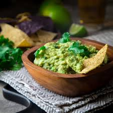

Classic Gaucamole

This is a classic gaucamole, a simple recipe that is always a crowd-pleaser. Perfect for parties, snacks, or as a topping for your favourite Mexican dishes. The key is using fresh, ripe ingredients.
Ingredients
- 3 ripe avocados
- 1/2 cup diced onion
- 1/2 cup chopped cilantro
- 1 teaspoon salt
- 1 small jalapeno, minced (optional)
Instructions
- Sliced the avocados in half, remove the pit and scoo[p the flesh into a mixinng bowl.
- Gently mash the avocados wityh a fork until you reach your desired consistency.
- Add the diced onion, cilantro, lime juice, salt, and minced jalapeno (if using)
- Stir everything together until well combined
- Taste amd adjust seasoning it necessary. Serve immediately.
Recipe by Awesome Eats.
Back to Homepage